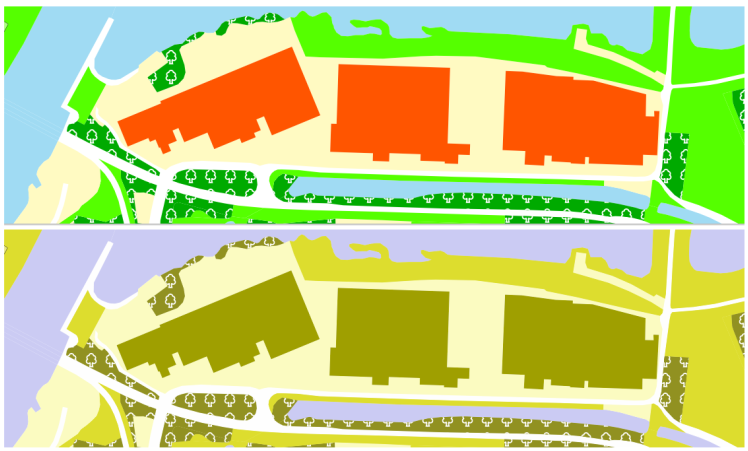
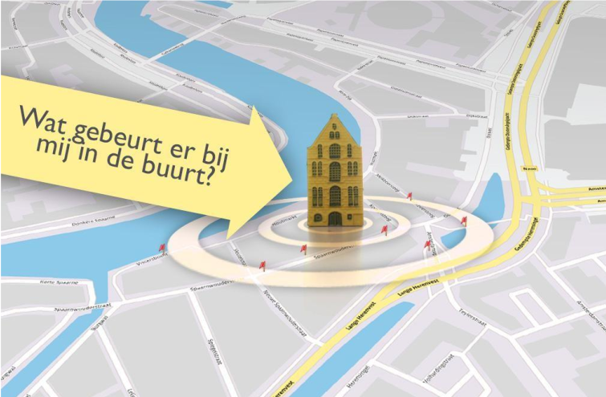
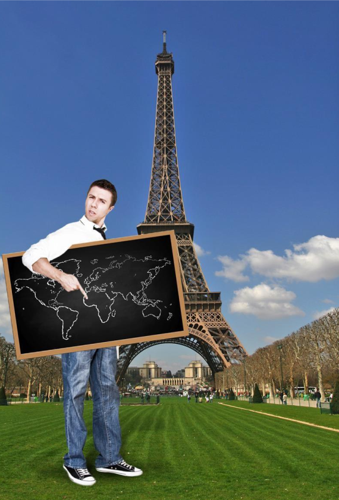

Creative Commons Attribution 4.0 International Public License (CC-BY)
Samenvatting
Principes, vuistregels en adviezen
Het publiceren van geo-informatie op een overheidswebsite en tegelijkertijd voldoen aan de
webrichtlijnen is zeker mogelijk. De principes, vuistregels en tips hieronder helpen u om dit in
de praktijk te brengen. In Bijlage D Afbeeldingen is een afbeelding opgenomen met deze principes en vuistregels.
Basisprincipes
De belangrijkste basisprincipes voor het publiceren van geo-informatie volgens de webrichtlijnen zijn:
Stel de gebruikersvraag centraal.
Ontwikkel voor de eindgebruiker.
Ontwikkel voor het web.
Vuistregels en adviezen
De onderstaande vuistregels en tips zijn een concrete uitwerking van de principes.
Hou het zo begrijpelijk en simpel mogelijk. Dit geldt voor informatie, functionaliteit en
presentatie. Beperk de communicatie waar mogelijk tot één thema en tot de essentiële
functionaliteiten voor het beantwoorden van de gebruikersvraag. Minder complexiteit betekent ook
minder werk voor ontwikkeling en beheer.
De kaart is geen doel op zich. Onderzoek de beste tekstuele oplossing om de locatiegebonden
gegevens te gebruiken. Deze handreiking beschrijft daarvoor verschillende opties. Bekijk hoe geo-
informatie kan helpen bij het beantwoorden van de vragen van de eindgebruiker. Daarbij is de
kaart een ondersteunend middel.
Gebruik en conformeer aan standaarden en technologie van het web.
Zorg ervoor dat in een projectteam voldoende kennis aanwezig is van communicatie, webtechnologie en geo-informatie. Deze kennis is zelden gebundeld in één persoon.
Test op conformiteit aan (web)standaarden. Dat kan met webbrowsers en online testtools.
Test vanaf het begin van het ontwikkelwerk en doe vroegtijdig een webrichtlijnen-toets. Test met
meerdere apparaten, op meerdere platformen.
Onthoud dat de eindgebruiker meestal niet dezelfde kennis en ervaring heeft als de ontwikkelaar
en de specialist.
In de volgende hoofdstukken werken we deze principes en vuistregels verder uit.
Let op: Voor het publiceren van geo-informatie volgens de webrichtlijnen bestaat geen universeel
toepasbare aanpak. Daarvoor zijn er te veel verschillende onderwerpen, systemen, platformen en
gebruikers.
Status van dit document
Deze paragraaf beschrijft de status van dit document ten tijde van publicatie. Het is mogelijk dat er actuelere versies van dit document bestaan. Een lijst van Geonovum publicaties en de laatste gepubliceerde versie van dit document zijn te vinden op https://www.geonovum.nl/geo-standaarden/alle-standaarden.
Dit is de definitieve versie van de handreiking. Wijzigingen naar aanleiding van consultaties zijn doorgevoerd.
1. Inleiding
Waarschuwing: Verouderd document
[Update 2 augustus 2021] Dit document is de webversie van het PDF bestand van Webrichtlijnen en geo 2.0 bèta, gepubliceerd op 15 januari 2015, wat gebaseerd is op WCAG 2.0. Dit document is een directe omzetting van het genoemde PDF bestand. Waar nodig zijn alleen kleine aanpassingen aan de tekst en opmaak gedaan (bijvoorbeeld nummering en kopjes van paragrafen aangepast), de inhoud is niet veranderd. Er zijn al enige tijd vernieuwde toegankelijkheidseisen en wetgeving over digitale toegankelijkheid, gebaseerd op WCAG 2.1. Dit document is hier nog niet op aangepast.
Eind 2013 publiceerde Geonovum in samenwerking met ICTU de eerste versie van de Handreiking Geo-
informatie en Webrichtlijnen. Vragen over dit onderwerp vanuit het werkveld waren hiervoor de aanleiding.
Continue ontwikkelingen in het domein van webrichtlijnen en geo-informatie maakten een update van de
oorspronkelijke handreiking gewenst. Deze ligt nu voor u.
Grootste verschillen met de eerdere versie zijn: de actualisatie van onderdelen en het verwerken van
opmerkingen, het toevoegen van praktijk- en code-voorbeelden en de versterkte samenwerking met de
ontwikkelaars van het toepassingskader Webrichtlijnen (Toepassingskader: Toegankelijkheid voor iedereen,
2014). De actualisatie is uitgevoerd door hetzelfde projectteam dat verantwoordelijk was voor de eerste
Handreiking Geo-informatie en Webrichtlijnen. Met dit document hopen ICTU en Geonovum het toegankelijk
publiceren van geo-informatie door overheidsorganisaties te vergemakkelijken voor alle geïnteresseerden.
We horen graag of dit document u geholpen heeft en of u verbeteringen weet aan te dragen.
De kaart van de toekomst is geen kaart – het is ingekaderde informatie, die je wordt
voorgeschoteld op basis van je locatie. Vroeger maakten veel gemeenten de fout om complexe
WebGIS-systemen op te tuigen, die een onbegrijpelijke hoeveelheid geografische informatie in een
klein scherm tonen. In plaats daarvan moet je betere manieren verzinnen om die informatie te
presenteren die belangrijk is voor de persoon die de vraag stelt.
- Ed Parsons Geo-ICT-er bij Google (Parsons, 2013)
Hoewel door sommigen de dood van de kaart wordt voorspeld, blijft de digitale kaart een van de beste manieren om geografische, ruimtelijke en lokale informatie te visualiseren. Zelfs als je nooit hebt leren kaartlezen, geeft een kaart je toch een vertrouwd gevoel en draaien we onszelf onwillekeurig naar een kaart toe.
- Gary Gale (Gale, 2013)
1.1 Leeswijzer
De belangrijkste principes, vuistregels en adviezen leest u in de Samenvatting. In Hoofdstuk 2 lichten we de belangrijke eisen uit de webrichtlijnen toe voor geo-informatie, inclusief toegankelijkheidskwesties en mogelijke oplossingen. Hoofdstuk 3 laat zien hoe het hanteren van een gebruikersperspectief helpt bij het publiceren van geo-informatie. Hoofdstuk 4 biedt handvatten voor toegankelijkheidsuitdagingen voor specifieke soorten geo-informatie: lijn- en vlakinformatie, rasterkaarten en animaties. In Hoofdstuk 5 leest u alles over de webrichtlijnen. Het gebruik van de webrichtlijnen levert veel voordelen op voor uw digitale communicatie. Welke dat zijn, leest u in Hoofdstuk 6. Ten slotte biedt Hoofdstuk 7 een verantwoording voor dit document en het project.
2. De richtlijnen toegelicht voor geo
In dit hoofdstuk beschrijven we de belangrijkste eisen uit de webrichtlijnen en lichten die toe voor geo-informatie. We doen dit aan de hand van de structuur van de webrichtlijnen versie 2: we houden de volgorde aan van de principes universeel, waarneembaar, bedienbaar en begrijpelijk. Van elk principe komen de belangrijkste eisen aan bod. Per eis belichten we aandachtspunten, veelvoorkomende toegankelijkheidskwesties en suggesties voor oplossingen. Wilt u meer weten over de webrichtlijnen? Lees dan Hoofdstuk 5 Wat zijn webrichtlijnen?
De webrichtlijnen kennen verschillende niveaus van conformiteit. Voor alle eisen en indelingen in niveaus kunt u terecht in het meest recente normdocument (Webrichtlijnen versie 2 Normdocument, 2014). Wij raden u aan om minimaal aan niveau AA te voldoen. Maar voor geo-toepassingen is de extra moeite die u moet doen om niveau AAA te behalen, minimaal. We beschrijven de richtlijnen hieronder voor niveau A of AA. Waar niveau AAA relevant is, noemen we dat expliciet.
2.1 Universeel
In deze paragraaf worden verschillende uitwerkingen van het principe universeel uitgelegd.
2.1.1 Gelaagd bouwen
Gebruik technologieën op zodanige wijze, dat de basiscontent en -functionaliteit die nodig zijn om een webpagina te kunnen gebruiken onder alle omstandigheden beschikbaar zijn.
Webrichtlijn I - Richtlijn U.3.1 (Webrichtlijnen versie 2 Normdocument, 2014)
Gelaagd bouwen betekent dat een website zodanig gelaagd is opgebouwd, dat iedereen gegarandeerd
toegang heeft tot de basisinhoud en -functionaliteit van de site, met welk type browser of internetverbinding
dan ook. Een gebruiker met een geavanceerde browser krijgt zo de optimale gebruikersbeleving, terwijl de
content en functionaliteit ook toegankelijk blijven voor een ‘eenvoudige’ gebruiker. Overigens heeft gelaagd
bouwen niet alleen voordelen voor gebruikers: voor zoekmachines biedt de basislaag de noodzakelijke
informatie om de content succesvol te kunnen indexeren.
2.1.1.1 Kwestie
Voor interactieve geografische webapplicaties kunnen browser plug-ins (zoals Macromedia Flash, Microsoft
Silverlight en Adobe Reader) nodig zijn om de informatie te benaderen. Het is verleidelijk om hierbij het
<canvas> element uit HTML5, WebGL of Scalable Vector Graphics (SVG) toe te passen. Maar lang niet
iedereen beschikt over de laatste browserversies die deze nieuwe webtechnologieën ondersteunen. Voor
interactieve kaartanimaties worden weer andere plug-ins gebruikt, zoals bijvoorbeeld QuickTime of MPEG.
Ook hier zijn SVG en WebGL open alternatieven, die echter niet door alle gangbare browserversies worden
ondersteund.
2.1.1.2 Mogelijke oplossing
In al deze gevallen kan gelaagd bouwen helpen. Een voorbeeld van gelaagd bouwen met geo-informatie en
kaarten is:
Zorg voor een duidelijke, tekstuele beschrijving van de informatie in de meest basale vorm.
Gebruik een niet-interactieve kaart waarop de informatie van 1 staat gepositioneerd, bijvoorbeeld met behulp van CSS.
Beschikt de gebruiker over technieken als JavaScript, en wilt u interactiviteit bieden? Gebruik dan JavaScript om de statische kaart van 2 te vervangen door een interactieve.
Een voorbeeld waarin gebruik wordt gemaakt van kaarten vindt u in een weblog van Brad Frost over gelaagd
bouwen (Adaptive Maps, 2012). In paragraaf 2.2.1 leest u meer over tekstalternatieven voor interactieve
kaarten, en in paragraaf 2.2.2 vindt u informatie over alternatieven voor kaartanimaties.
2.1.2 Foutmeldingen
Zorg voor bruikbare foutmeldingen.
-Webrichtlijn II - Richtlijn U.4.1 (Webrichtlijnen versie 2 Normdocument, 2014)
(gui.layers.TilingLayer):Can't find the parent Map component.
Voorbeeld Foutmelding gepresenteerd aan eindgebruiker door een geo-viewer
Het geven van bruikbare foutmeldingen is niet specifiek voor geo-informatie. Toch is dit ook belangrijk voor
toepassingen die met geo-informatie werken. Denk bijvoorbeeld bij het zoeken van locaties via een formulier
aan het geven van suggesties bij spelfouten (Bedoelde u...?), in plaats van het weergeven van ‘Geen
resultaten’.
Ook het afvangen en omzetten van foutmeldingen van eventuele (externe) webservices is zinvol. Dan
begrijpt de gebruiker wat er aan de hand is. Meer tips over foutmeldingen vindt u op de pagina over
contingency design op webrichtlijnen.nl (Webrichtlijnen.nl, 2014).
2.1.3 Invoer: formulier om locatie in te tekenen
Maak formulieren optimaal bruikbaar.
Webrichtlijn III - Richtlijn U.5.1 (Webrichtlijnen versie 2 Normdocument, 2014)
Voor het zoeken van locaties op adres of plaatsnaam wordt vaak een formulier gebruikt. Daarbij is het
belangrijk om de gebruiker goed naar het gewenste resultaat te begeleiden. Denk bijvoorbeeld aan het
suggereren van andere schrijfwijzen van een plaatsnaam. Of het opnemen van de provincienaam bij een
plaatsnaam, zodat de gebruiker de juiste plaats kan kiezen.
2.1.3.1 Kwestie
Een gebruiker kan een locatie niet altijd tekstueel aanduiden. Bijvoorbeeld bij een plek ergens op straat,
midden in een weiland of op het water. Voor een Melding Openbare Ruimte (MOR) wordt regelmatig gevraagd
om de locatie van de melding aan te geven, en voor bepaalde vergunningaanvragen (bijvoorbeeld een
Watervergunning) is een coördinatenpaar essentieel. Hoe zou de invoer van de locatie dan kunnen, op een
toegankelijke manier?
2.1.3.2 Mogelijke oplossingen
Het is lastig om dit generiek aan te geven. Oplossingen kunnen liggen in gebruik van extra tooling, zoals de
JavaScript Geolocation API in HTML5. Een gebruiker met een apparaat dat GPS ondersteunt, kan hiermee
op de plek zelf een locatie automatisch invoeren. Of de gebruiker voert de locatie bij benadering in: via een
adres met een tekstuele beschrijving (of een straal en/of kaart) om de locatie te corrigeren. Deze manier
van invoeren vraagt iets meer verwerking om tot een exacte locatie te komen. Toch kan het soms nuttig
zijn om het op deze manier te doen.
Probeer in ieder geval te voorkomen dat locaties of gebieden opnieuw gedigitaliseerd worden. Achterhaal
liever de gewenste geometrie uit bestaande registraties door administratieve eigenschappen (zoals adres en
eigenaar) te koppelen. In plaats van het intekenen van een perceel om te bepalen of dit in een
vogelrichtlijngebied ligt, kan de gebruiker ook een perceelnummer invoeren. Daarna kan het systeem de
geometrie van zijn perceel uit de Basisregistratie Kadaster (BRK) ophalen, en de geometrie van het
vogelrichtlijngebied uit Natura 2000. De webapplicatie doet zelf de geografische analyse van de twee
geometrieën, en stelt daarmee de overlap vast. Op deze manier kunt u de vraag van de gebruiker vrij simpel
beantwoorden.
In paragraaf 2.4.2 leest u meer over het bieden van hulp bij het invullen van formulieren om fouten te
vermijden.
2.1.4 iFrames en kaarten
Sluit niemand uit bij het aanbieden van content middels geneste weergavekaders.
Webrichtlijn IV - Richtlijn U.7.1 (Webrichtlijnen versie 2 Normdocument, 2014)
Geografische webapplicaties worden vaak als zelfstandige applicaties ontwikkeld, met eigen tooling en los
van bestaande Content Management Systemen (CMS). Met als gevolg dat een iFrame nodig is om de
geografische webapplicatie ‘in te lezen’ in het CMS. Met zo’n iFrame reserveert het CMS een vaste plek op
de pagina voor invulling door de geografische webapplicatie. De eindgebruiker merkt hier vrijwel niets van.
Een voorbeeld hiervan is de Geluidskaart van de gemeente Nieuwegein (Geluidskaart Nieuwegein, 2014). Deze pagina roept met een iFrame de geografische webapplicatie aan van een andere URL. (GeoServer nieuwegein, 2014)
Ook PDOK Kaart (PDOK Kaart, 2014) kan met de optie “Als URL” via een iFrame worden aangeroepen vanuit een CMS.
2.1.4.1 Kwestie
Over het algemeen raden wij iFrames af. Gebruikers kunnen namelijk vast komen te zitten via een iFrame,
of ze kunnen informatie niet in de juiste context vinden. (Om dit te omzeilen kunt u een link aanbieden
buiten het iFrame, waarmee de gebruiker de geo-applicatie ook als aparte pagina kan laden. Maar dit is een
noodscenario.)
2.1.4.2 Mogelijke oplossingen
Er zijn ook andere manieren om geo-applicaties in te passen. Online kaartplatformen bieden vaak de
mogelijkheid om via script kaarten in te bouwen in uw eigen systeem. Dat gaat bijvoorbeeld via Map API's
(Javascript-bibliotheken). Of u kunt op het kaartplatform een stukje HTML-code genereren, dat u eenvoudig
kopieert naar uw eigen systeem (zoals bij Google Maps en PDOK Kaart). Als u via script rechtstreeks een
kaart inbouwt, hebt u bovendien de mogelijkheid om nog eigen wensen door te voeren: u kunt dan
bijvoorbeeld bepalen hoe groot het zoomniveau is, of welke kaartlagen de applicatie laat zien.
2.1.5 Openheid, open specificaties
Gebruik bij het aanbieden van content ten minste open, niet leverancier afhankelijke en voor webcontent bedoelde specificaties. En geef bij gelijke geschiktheid de voorkeur aan open standaarden.
Webrichtlijn V - Richtlijn U.9.1 (Webrichtlijnen versie 2 Normdocument, 2014)
Gebruikt u WebGIS-frameworks of JavaScript-bibliotheken om interactieve kaartapplicaties te publiceren?
Dan is het goed om te weten dat die veel HTML-, CSS- en JavaScript-code bevatten en/of automatisch
genereren.
2.1.5.1 Kwestie
Het komt geregeld voor, dat deze code niet volledig voldoet aan webstandaarden. Daardoor is uw website
niet optimaal toegankelijk.
2.1.5.2 Mogelijke oplossing
Het is verstandig om uw website hierop te toetsen, bijvoorbeeld met online validators. In Bijlage 3 vindt u
een aantal aanbevolen validators.
2.1.6 Toegankelijke URI's
URI's dienen duidelijk, uniek en duurzaam te zijn.
Webrichtlijn VI - Richtlijn U.10 (Webrichtlijnen versie 2 Normdocument, 2014)
Is mogelijk om elke plek op een kaart met een unieke en leesbare URI te bereiken? Volgens de webrichtlijnen
moet het adres van een webpagina duidelijk, uniek en duurzaam zijn. De URI van een webpagina is in de
praktijk een URL. Technisch gezien zijn URL’s en URI’s echter niet exact hetzelfde. Deze website over URI’s geeft hier meer informatie over (Uniform Resource Identifier, Wikipedia, 2014).
2.1.6.1 Kwestie
Duurzaam en uniek (niveau AAA) is geen probleem: een plek op een kaart is namelijk statisch. Over een
jaar verwijst een set coördinaten nog steeds naar dezelfde plek. Het eerste criterium, duidelijkheid, is iets
ingewikkelder.
2.1.6.2 Mogelijke oplossingen
Er zijn methodes om URI’s duidelijk te houden. Een gebruiker navigeert naar een adres dat bijvoorbeeld als
volgt is opgebouwd: /den-haag/wilhelmina-van-pruisenweg/noord-133m/west-5m. De URI toont zo niet
alleen de exacte locatie, maar ook de context van waaruit de gebruiker werkt. Dit zorgt voor duidelijkheid.
Daarnaast: niet elke positie op een kaart hoeft bereikbaar te zijn. De kaart is een middel waarmee u
informatie ontsluit. Het is deze informatie die bereikbaar moet zijn via URI's. Dat kunnen vlakken zijn
(gebieden als een veiligheidsregio of gemeente), lijnen (zoals routes) of punten (een exacte locatie): die
moeten afzonderlijk herkenbaar zijn. De onderliggende punten op de kaart zijn decoratief of geven context,
en zijn geen primaire inhoud. Over primaire informatie leest u meer in paragraaf 2.2.1.
2.2 Waarneembaar
In deze paragraaf worden verschillende uitwerkingen van het principe waarneembaar uitgelegd.
2.2.1 Tekstalternatieven
Lever tekstalternatieven voor alle niet-tekstuele content”, behalve voor (o.a.) zintuiglijke of decoratieve content of “slechts voor visuele opmaak wordt gebruikt.
Webrichtlijn VII - Richtlijn 1.1 (Webrichtlijnen versie 2 Normdocument, 2014)
Geografische webapplicaties zijn een middel om locatiegebonden informatie te publiceren. Met een kaart
toont u informatie op een bepaalde locatie. Toegankelijkheid gaat erom, dat die informatie bereikbaar is
voor de gebruiker.
2.2.1.1 Kwestie
Veel locatiegebonden informatie wordt alleen in een afbeelding (een kaartlaag) gepresenteerd. Maar de
boodschap van de informatie moet ook tekstueel beschikbaar te zijn, al dan niet via een zoekingang of
filtermogelijkheid.
2.2.1.2 Mogelijke oplossingen
U kunt dit bijvoorbeeld doen in een statische lijst, of door middel van een formulier dat op te vragen is als
tekst. Hier zijn verschillende oplossingen voor. Welke oplossing u kiest, hangt onder meer af van het soort
informatie en de toepassing. In deze sub paragraaf worden de verschillende oplossingen aangeboden om
tot een tekst alternatief te komen. In Hoofdstuk 3 wordt dieper ingegaan op het bieden van een
tekstalternatief door een andere aanpak voor te stellen, waarbij de gebruikersvraag centraal staat.
2.2.1.3 Wat is de primaire informatie?
Bedenk wat de primaire informatie is, die u wilt overdragen. En presenteer die informatie ook als tekst. U
hoeft namelijk niet alle beschikbare informatie in de geo-applicatie toegankelijk te maken. Bepaalde
secundaire informatie (die wel visueel op de kaart aanwezig is) hoeft niet voor iedereen op elk apparaat
zichtbaar te zijn. Voor de optocht van Sinterklaas zijn bijvoorbeeld alleen de locatie van het officiële onthaal
en de straten van de aansluitende optocht de primaire informatie.
Een groot voordeel van een geografische webapplicatie is dat een gebruiker er zelf aanvullende informatie
uit af kan leiden. Bij de Sinterklaasoptocht kan hij bijvoorbeeld meteen zien waar de dichtstbijzijnde OV-
halte of parkeergelegenheid is.
Presenteert u deze aanvullende (en dus secundaire) informatie als primaire informatie? Dan moet u die ook
toegankelijk (bijvoorbeeld in tekst) aanbieden. Doet u dat niet, dan is deze afgeleide informatie ‘decoratief’.
2.2.1.4 Wat de kaart toont is niet altijd logisch
Een kaart op internet laat niet altijd het meest intuïtieve stukje van de omgeving zien. De gebruiker navigeert
altijd vanuit een bepaalde locatie (bijvoorbeeld het thuisadres). Alle apparaten die hij daarvoor kan
gebruiken, hebben een rechthoekig scherm. Daardoor kan het gebeuren dat elementen die dichtbij zijn, niet
op de kaart getoond worden. En dat elementen die verder weg zijn, wel zichtbaar zijn. In Figuur 1 ziet u
hier een voorbeeld van.
Punt 2 is dichterbij dan punt 3, maar wordt niet getoond op een normaal scherm
Bij het maken van een tekstuele variant van een visuele kaart is het goed om hier rekening mee te houden.
Leg dus niet uit wat er op de rechthoekige kaart staat, maar geef de informatie logisch weer, geredeneerd
vanuit de cirkelvormige straal. Dat kan betekenen dat een tekstuele beschrijving andere resultaten geeft
dan de visuele variant.
Een rond radarscherm is het beste om vanuit een locatie te denken.
Voorbeeld - Radar
Bij GEOZET wordt de functionaliteit in twee lagen aangeboden: een core en enhanced versie. De core is een formulier waarin locatie gevraagd wordt, met zoekresultaten gesorteerd op afstand. Hoe dichterbij het zoekresultaat, hoe hoger het in de lijst staat. De enhanced versie is een volledig interactieve kaart. De functionaliteiten zijn niet hetzelfde, zo kun je in de core zoomen terwijl in de enhanced versie er een straal opgegeven kan worden. Het effect is gelijkwaardig, maar de uitvraag aan de gebruiker verschilt
Geaccepteerde uitgangspunten van GEOZET:
Er kan een gering onderscheid zijn tussen de zoekresultaten die – bij opgave van eenzelfde adres - getoond worden in de core-versie en in de enhanced-versie.
Bepaalde secundaire informatie, die niet direct bijdraagt aan het beantwoorden van de geformuleerde zoekvraag, kan worden getoond in de enhanced-versie en niet in de core-versie.
De enhanced-versie kan secundaire informatie bevatten die niet volledig voldoet aan de webrichtlijnen en de toegankelijkheidsrichtlijnen.
Voorbeeld - Geozet
2.2.2 Op tijd gebaseerde media
Lever alternatieven voor op tijd gebaseerde media
Webrichtlijn VIII - Richtlijn 1.2 (Webrichtlijnen versie 2 Normdocument, 2014)
Wanneer de webrichtlijnen spreken over tijd gebaseerde media, dan gaat het meestal over online
gepubliceerd videomateriaal. In de context van geo-informatie zijn de webrichtlijnen met betrekking tot tijd
gebaseerde media vooral van belang voor kaartanimaties. Kaartanimaties zijn meestal zonder geluid. In
veel gevallen zijn het ‘vooraf opgenomen’ animaties, zoals de geografische verspreiding van een
griepepidemie door de tijd. Een voorbeeld van een ‘live’ kaartanimatie is weerinformatie, waarbij gebruikers
kunnen zien of er buien aankomen.
Een tekstuele transcriptie van een kaartanimatie geeft, in correcte volgorde, tekstbeschrijvingen van de
visuele informatie. Het is een beproefd en effectief middel om welke kaartanimatie dan ook optimaal
toegankelijk te maken.
2.2.3 Onderscheidbaar
Kleur wordt niet als het enige visuele middel gebruikt om informatie over te brengen, een actie aan te geven, tot een reactie op te roepen of een visueel element te onderscheiden.
Webrichtlijn IX - Richtlijn 1.4.1 (Webrichtlijnen versie 2 Normdocument, 2014)
Maak het voor gebruikers gemakkelijker om voorgrondinformatie te scheiden van de achtergrond.
Presenteert u visuele informatie boven op een achtergrond? Zorg er dan voor dat die informatie dan
voldoende met de achtergrond contrasteert.
2.2.3.1 Kwestie
Veel kaarten gebruiken kleuren om primaire informatie weer te geven. Maar alleen kleur is niet toegankelijk
genoeg. Een gebruiker die kleurenblind is, kan hier namelijk niet mee uit de voeten.
2.2.3.2 Mogelijke oplossingen
Gebruik naast kleur ook vorm. Bijvoorbeeld bij symbolen op een kaart. Zorg, in plaats van alleen rode en
groene cirkels, ook voor een andere vorm: gebruik rode cirkels en groene vierkantjes. Zorg ervoor dat de
belangrijkste informatie (dus de informatie die door de kaart ontsloten wordt, en niet de kaart zelf) goed
leesbaar is qua contrast.
De visuele weergave van tekst en afbeeldingen van tekst heeft een contrastverhouding van ten
minste 4,5:1”, behalve als: ”Tekst of afbeeldingen van tekst die deel zijn van een inactieve
component van de gebruikersinterface, die puur decoratief zijn, die voor niemand zichtbaar zijn, of
die onderdeel zijn van een afbeelding die significant andere visuele content bevat, hebben geen
contrasteis.
Webrichtlijn X - Richtlijn 1.4.3 (Webrichtlijnen versie 2 Normdocument, 2014)
De eis over kleurcontrast gaat over de primaire content. Voor een achtergrondkaart heeft de contrast-eis
vrijwel geen gevolgen. De meeste kaartachtergronden hebben tussen bijvoorbeeld straatnamen en
straatondergrond al genoeg contrast. Tussen kleurvlakken onderling geldt geen eis.
Figuur – Punten, Vorm, Kleur, Gebruik
Onderscheid maken met alleen kleur, kan zorgen voor problemen bij kleurenblindheid. De voorbeelden in
Figuur 2 laten zien dat het gebruik van vorm (in aanvulling op kleur) kan helpen. Het onderscheid in
categorieën is in deze voorbeelden te maken via kleur en vorm. Links toont wat iemand ziet als alleen kleur
gebruikt wordt voor het onderscheid, rechts als ook vorm gebruikt wordt. De bovenste afbeeldingen zijn de
normale kleurweergaves, de onderste simuleren een bepaald soort kleurenblindheid (zogenaamde
Deuteranopia). De iconen die kleur en vorm gebruiken zijn ook met kleurenblindheid te onderscheiden. Voor
vlak-informatie kan in plaats van alleen kleur ook met arcering en/of symbolen gewerkt worden.

Figuur – Kleur en vorm voor vlak-informatie
De bovenste helft toont onderscheid door kleur en vorm voor vlak-informatie. In de onderste helft is een
bepaald soort kleurenblindheid (zogenaamde Deuteranopia) gesimuleerd. Het onderscheid in kleur is bijna
weggevallen, maar door ook vorm te gebruiken is wel degelijk onderscheid te maken.
2.3 Bedienbaar
In deze paragraaf worden verschillende uitwerkingen van het principe bedienbaar uitgelegd.
2.3.1 Toetsenbordbediening
Nota bene oorspronkelijke eis mist in document
Webrichtlijn XI - Richtlijn 2.1 (Webrichtlijnen versie 2 Normdocument, 2014)
De muis is een vanzelfsprekend middel voor de bediening van kaartfunctionaliteit. Maar niet iedereen kan
op elk apparaat gebruikmaken van een muis. Voor een goede toegankelijkheid van een website is volledige
toetsenbordbediening essentieel. Daarom vraagt dit onderwerp om extra aandacht.
2.3.1.1 Kwestie
Vaak biedt een website functionaliteit (knoppen), waarmee de gebruiker de applicatie kan besturen en
gegevens kan opvragen. Helaas is deze functionaliteit vaak niet (of niet volledig) te bedienen met het
toetsenbord.
De Risicokaart is een voorbeeld van een kaart die helemaal niet te bedienen is met het toetsenbord
(Risicokaart van Nederland, 2014)
Voorbeeld - Risicokaart
Ruimtelijke Plannen is een voorbeeld van een webapplicatie waarvan de het formulier en kaart maar beperkt te bedienen zijn met het toetsenbord (Webapplicatie van ruimtelijke plannen, 2014).
2.3.1.2 Mogelijke oplossingen
Met het toetsenbord moet de gebruiker zowel door de kaart zelf als door alle informatie-elementen kunnen
navigeren. Dus als er informatie in pop-ups staat, dan moeten die pop-ups te openen zijn via het
toetsenbord.
Dat kan via voorgeprogrammeerde access keys: bijvoorbeeld de pijltjestoetsen om de kaart te bewegen, of
de plus- en min-toetsen voor in- en uitzoomen. De navigatietools die vaak linksboven in de kaart staan om
de kaart te verplaatsen en in te zoomen, kunt u hiermee ook bereikbaar maken. Een voorbeeld hiervan is
de kaart Bekendmakingen op Overheid.nl (zie ).
De mogelijkheid van access keys hoeft u overigens niet altijd zelf te implementeren: soms maakt deze
functionaliteit standaard deel uit van softwarebibliotheken.
Besteed dus aandacht aan toetsenbordbediening, ook bij het testen. Laat overbodige functionaliteit weg;
dat scheelt ook werk met het toegankelijk maken.
De bibliotheken OpenLayers en LeafletJS bieden navigatie via het toetsenbord. Echter, het bekijken van gegevens op een kaart, bijvoorbeeld via informatie-ballonnen, is vaak lastig met alleen het toetsenbord. Ondersteuning hiervoor is slechts in enkele gevallen aanwezig. Bij de keuze voor een toolbox en bij het realiseren verdient toetsenbordbediening daarom extra aandacht.
Voorbeeld - Navigatie via het toetsenbord
2.3.2 Genoeg tijd
Geef gebruikers genoeg tijd om content te lezen en te gebruiken.
Webrichtlijn XII - Richtlijn 2.2 (Webrichtlijnen versie 2 Normdocument, 2014)
Bij kaartanimaties is het belangrijk, dat de gebruiker de timing kan aanpassen en de animatie kan pauzeren,
stoppen en verbergen. In paragraaf 2.2.2 leest u meer over kaartanimaties.
2.3.3 Toevallen
Ontwerp content niet op een manier waarvan bekend is dat die toevallen veroorzaakt.
Webrichtlijn XIII - Richtlijn 2.3 (Webrichtlijnen versie 2 Normdocument, 2014)
Zorg bij het automatisch afspelen van kaartanimaties ervoor, dat vlakken niet sneller veranderen dan 3 keer
per seconde. Animeer kleine geografische eenheden en gebruik andere signaalkleuren dan de kleur rood.
Accessibility besteedt op haar website aandacht aan algemene flits en rodeflitsdrempelwaarden
(Webrichtlijnen 2 - Principes, richtlijnen en succescriteria (www.accessibility.nl), 2014). Over kaartanimaties
staat meer informatie in paragraaf 2.2.2.
2.4 Begrijpelijk
In deze paragraaf worden verschillende uitwerkingen van het principe universeel uitgelegd.
2.4.1 Leesbaarheid en leesniveau
Maak tekstcontent leesbaar en begrijpelijk.
Webrichtlijn XIV - Richtlijn 3.1 (Webrichtlijnen versie 2 Normdocument, 2014)
Als tekst, nadat eigennamen en titels verwijderd zijn, een leesvaardigheid vereist die hoger is dan het niveau van drie jaar middelbaar onderwijs, dan is aanvullende content beschikbaar, of er is een versie beschikbaar die geen leesvaardigheid vereist die hoger is dan van drie jaar middelbaar onderwijs.
Webrichtlijn XV - Richtlijn 3.1.5 (Webrichtlijnen versie 2 Normdocument, 2014)
2.4.1.1 Kwestie
Soms staat in deze ballonnen per ongeluk nog technische informatie, zoals identifiers, codes of afkortingen.
Maar het kunnen ook (interne) beschrijvingen zijn, die niet begrijpelijk of relevant zijn voor de algemene
gebruiker.
2.4.1.2 Mogelijke oplossing
Verwijder overbodige informatie als technische details of beschrijvingen voor intern gebruik. Besteed hier
aandacht aan.
2.4.2 Assistentie bij invoer
Help gebruikers om fouten te vermijden en ze te verbeteren
Webrichtlijn XVI - Richtlijn 3.3 (Webrichtlijnen versie 2 Normdocument, 2014)
Vraagt u een gebruiker om een adres in te voeren? Voorkom dan dat een onjuiste combinatie (van
bijvoorbeeld straatnaam, woonplaats en postcode) een foutmelding oplevert. Als een woonplaats in
meerdere gemeenten valt, dan kan de webapplicatie de gemeentenaam of provincienaam suggereren. Dit
helpt de gebruiker om de juiste woonplaats te identificeren. Zie ook paragraaf 2.1.3.
Als een invoerfout automatisch ontdekt wordt en suggesties voor verbetering bekend zijn, dan worden de suggesties aan de gebruiker geleverd, tenzij dit de beveiliging of het doel van de content in gevaar zou brengen.
Webrichtlijn XVII - Richtlijn 3.3.3 (Webrichtlijnen versie 2 Normdocument, 2014)
3. De gebruikersvraag centraal
Suggesties voor een andere aanpak bij het ontsluiten van locatiegebonden informatie.
Locatiegebonden informatie toegankelijk maken voor iedereen kan een lastige opgave zijn. Een
hele werkbare aanpak is de vraaggerichte aanpak: stel de gebruikersvraag centraal, probeer die
(tekstueel) te beantwoorden en beslis daarna pas welk middel het meest geschikt is om de
gevraagde informatie te presenteren. Beperk de informatie en functionaliteit tot wat nodig is om
de vraag te beantwoorden.
Welke functionaliteit u het beste kunt gebruiken hangt af van veel factoren, zoals het doel van de toepassing,
de te beantwoorden vragen, de complexiteit, de benodigde (en beschikbare) gegevens en de gewenste
presentatievorm en mate van interactiviteit. Daarnaast spelen factoren als budget, tijd en capaciteit
uiteraard ook een rol.
I suppose it is tempting, if the only tool you have is a hammer, to treat everything as if it were a nail.
- Abraham Maslow
3.1 Het aanbod centraal
Een geografische webapplicatie met een interactieve kaart is voor veel overheidsorganisaties dé manier om
locatie informatie online te publiceren. De kaart vormt een visueel aantrekkelijke manier om zoveel gegevens
aan te bieden. Deze geografische webapplicaties bieden gebruikers bovendien veel mogelijkheden om de
kaart aan te passen. De rijkdom aan functionaliteit maakt het lastig en kostbaar om een toegankelijk
alternatief te maken, dat aan de webrichtlijnen voldoet. Hierdoor ontstaat het beeld dat webrichtlijnen en
geo-informatie onverenigbaar zijn.
Waarom zou een gebruiker geïnteresseerd zijn in een kaart met allerlei datasets door elkaar heen? De praktijk toont aan dat specifieke themakaarten meer bezoekers krijgen dan kaartportals. Volgens dit voorbeeld worden in Denver thematische kaarten bijvoorbeeld drie keer meer bezocht dan portals (bron: How the Public Actually Uses Local Government Web Maps: Metrics from Denver, 2012). De meeste bezoekers blijven kort op de website en willen slechts antwoord op hun ene vraag en verdwijnen weer van de pagina Why Map Portals Don’t Work, 2013.
Deze aanbodgerichte aanpak is begrijpelijk. Het sluit aan bij de gangbare en beschikbare middelen om geo-
informatie online te publiceren. Door alle gegevens in één keer op een kaart af te beelden, denkt de
organisatie wellicht, dat zij daarmee aan bepaalde wettelijke eisen of transparantie doelstellingen voldoet.
De gebruikers kunnen immers bij de gegevens: zij kunnen uitzoeken wat zij nodig hebben.
Op deze manier publiceer je een soort ‘digitale atlas’. De verwachting daarbij is, dat gebruikers deze rustig
doorbladeren, op zoek naar dat ene gegeven. Zo wordt het web niet primair gebruikt: zo'n geografische
webapplicatie sluit niet aan bij de diversiteit van gebruikers en middelen. Denk alleen al aan alle mogelijke
apparaten en momenten waarop gebruikers informatie online opzoeken. Wie kan bijvoorbeeld op zijn
mobiele telefoon zo'n applicatie snel en volledig laden, laat staan gebruiken? Heeft iedereen altijd wel een
muis tot zijn beschikking? Dit zijn allemaal kwesties op het gebied van toegankelijkheid. Ten slotte rijst de
vraag, hoeveel van deze geografische informatie daadwerkelijk wordt geraadpleegd en gebruikt.
De beste manier om een boom te verstoppen, is in het bos.
-Jan Terlouw
3.2 De vraag centraal
Tegenover de aanbodgerichte aanpak die we hierboven beschreven, staat de vraaggerichte aanpak. Waarom
willen gebruikers bepaalde digitale dienstverlening of informatie op het web eigenlijk gebruiken? Met welke
vraag komen zij naar de website? Welk antwoord moet je daarop geven? En: is dat ook het antwoord waar
die gebruiker op zat te wachten?
Gebruikers komen naar een website voor een bepaalde taak: om informatie op te vragen of een aanvraag
te doen. Om de gebruiker te helpen, bieden overheden op hun websites gegevens en functionaliteit aan. In
een - voor de gebruiker - ideale situatie zijn die gegevens zo bewerkt, dat ze naadloos aansluiten bij zijn
behoefte. Zodat hij zo snel mogelijk het juiste antwoord heeft op zijn vraag. Dat is een vraaggerichte
ontsluiting: het zo simpel en direct mogelijk geven van het juiste antwoord op de vraag van de gebruiker.
Niet meer en niet minder!
Het is belangrijk om de top-5 taken waarom gebruikers een website bezoeken te bepalen, aldus de “Long
Neck”-theorie van Gerry McGovern. Deze 5 taken staan voor 25 procent van de aandacht en
klanttevredenheid. Door de website te richten op deze zogenaamde top-taken krijg je een meer klantgerichte
website en creëer je een positieve gebruikerservaring.
Geo-informatie moet gebruik maken van deze wetenschap en aansluiten bij de gebruikersvraag In veel
gevallen is een atlas niet de echte gebruikersvraag. Veel vragen over locatiegebonden informatie gaan over
de locatie van de gebruiker. In het algemeen is het huisadres van een burger of het vestigingsadres van een
bedrijf dus een goed startpunt en handige (zoek)ingang. Daarbij is het in de meeste gevallen handig om
naar één thema tegelijk te kijken. De volgende voorbeelden illustreren dit.

Figuur – Veelvoorkomende gebruikersvraag: wat gebeurt er bij mij in de buurt?
Voorbeeld - Bestemmingsplannen
Bestemmingsplannen worden gepubliceerd, zodat een gebruiker kan zien wat wel en wat niet mag
op plekken die hij/zij interessant vindt. Kijkend naar de belevingswereld van de gebruiker, is de
vraag waarschijnlijk alleen niet om alle bestemmingsplannen in zijn/haar gemeente of buurt te
kunnen zien op een kaart (wat het antwoord van de aanbieder lijkt te zijn), maar veel specifieker:
wat mag ik wel/niet doen bij mijn huis (of op locatie X)? Of: mag ik hier mijn bedrijf uitbouwen?
Voorbeeld - Afvalinzameling
Vraag: Waar zijn de glasbakken bij mij in de buurt te vinden?
Antwoord: Een lijst met dichtstbijzijnde glasbakken en de straatnaam erbij (“straat X, bij Winkelcentrum Y”)
Voorbeeld - Vergunningsaanvragen
Vraag: Welke aanvragen zijn bij mij in de buurt gedaan? (En zal ik daar hinder van ondervinden?)
Antwoord: Een lijst met aanvragen in de buurt van het opgegeven adres, gesorteerd op afstand van het opgegeven adres. GEOZET beantwoordt de vraag: “Welke lokale bekendmakingen zijn er recent bij mij in de buurt gedaan?”
Voorbeeld - Zonne-energie
Vragen: Wat zou ik kunnen besparen met zonne-energie? Is mijn dak geschikt voor zonne-energie?
Antwoord: Een simpel ja of nee of “zeer geschikt” tot “niet geschikt”. Eventueel met een indicatie van de te verwachten opbrengst.
Figuur – Zonatlas
De Zonatlas gebruikt als zoekingang een adres, daarna verschijnt de rest, met een antwoord in hoeverre een dak geschikt is voor zonne-energie. Zie bijvoorbeeld www.zonatlas.nl/amsterdam/. Dit is een voorbeeld van een vraaggerichte benadering, ondersteund door geo-informatie.
Voorbeeld - Luchtkwaliteit
Vragen: Is de lucht bij mij thuis schoon? (“Zijn we veilig?”) Hoe verhoudt zicht dat tot de omgeving, landelijk, ...?
Antwoord: Een simpele classificatie: vervuild, schoon, boven/onder gemiddeld.
Voorbeeld - Handelsmissies
Vragen: Vragen: Waar gaan de volgende handelsmissies van de Minister van Buitenlandse zaken heen? Wanneer is de volgende handelsmissie naar Land X?
Antwoord: Een alfabetische lijst met bestemmingen.
De antwoorden bij alle bovenstaande voorbeelden zijn uitstekend tekstueel te geven. Deze antwoorden zijn
goed toegankelijk in een kaart te presenteren als ondersteuning bij de tekst. Deze kaarten vereisen weinig
functionaliteit of visualisatie. Het is ook goed te realiseren dat naast kleurenblindheid niet iedereen overweg
kan met kaartlezen of een kaart volledig begrijpt (Figuur - Niet iedereen begrijpt een kaart).

Niet iedereen begrijpt een kaart
4. Handvatten
Presentatie van geo-informatie, locatie-invoer en kaartfunctionaliteit
Dit hoofdstuk biedt praktische oplossingsrichtingen om geo-informatie op een toegankelijke
manier in te zetten in de online communicatie en transacties tussen overheden en burgers en het
bedrijfsleven. Door de bijbehorende beslisboom te doorlopen wordt de keuze voor een specifieke
oplossingsrichting gemaakt. De vraaggerichte aanpak die in Hoofdstuk 3 is gepresenteerd vormt
hierbij de belangrijkste invalshoek voor het doorlopen van de beslisboom(In de eerste stap van
de beslisboom stel je vast wie de centrale bron of hoofdrolspeler in de uitwisseling van geo-
informatie is. Wil een organisatie enerzijds geografische informatie online presenteren of moet
een burger of bedrijf een geografische locatie invoeren om een transactie met een organisatie
uit te voeren.
Beslisboom
In paragraaf 4.1 wordt ingegaan op de oplossingsrichtingen om als
organisatie geografische informatie te presenteren. In paragraaf 4.2 staat het invoeren van een geografische
locatie centraal. Ten slotte biedt paragraaf 4.3 een aantal handvatten om een interactieve kaart op een
toegankelijke manier aan te bieden. De paragrafen bevatten verwijzingen naar code voorbeelden. Alle
voorbeelden zijn online te vinden op de Github pagina van Geonovum met Code voorbeelden Webrichtlijnen en
Geo-informatie, 2014.
4.1 Geo-informatie presenteren
Nadat is vastgesteld, dat de organisatie, die geografische informatie online wil presenteren de hoofdrolspeler
is, is het van belang om de aard van geografische informatie te bepalen. Wat wil je presenteren?
In paragraaf 4.1.1 worden toegankelijke oplossingsrichtingen geboden voor afbeeldingen zoals luchtfoto's,
(historische) topografische kaarten, maar ook voor resultaten van modelanalyses zoals
geluidscontourkaarten. Naast statische afbeeldingen worden ook animaties gebruikt om ontwikkelingen over
ruimte en tijd te kunnen weergeven. In paragraaf 4.1.2 staan animaties centraal. In paragraaf 4.1.3 worden
toegankelijke oplossingsrichtingen geboden voor het presenteren van (een verzameling van) individuele
geografische objecten zoals locaties, trajecten, routes, regio's en gebieden.
4.1.1 Statische afbeeldingen
4.1.1.1 Kaarten ter illustratie
Sommige geo-informatie is alleen als een afbeelding beschikbaar en bevat het de primaire informatielaag.
Een voorbeeld is een gedigitaliseerde, (ingescande) historische kaart ( (Historische Atlas Nijmegen, 2014).
In dat geval moet u een toegankelijk alternatief aanbieden. Maar het is ondoenlijk om de volledige inhoud
van zo’n kaart in een tekstvorm te gieten.
4.1.1.1.1 Aanpak
Beschrijf het gebied dat is afgebeeld, wie de maker is en wanneer de kaart is gepubliceerd.
Beschrijf de algemene boodschap of het ruimtelijke patroon van de kaart.
Let op toegankelijke kaartnavigatie (paragraaf 4.3.1).
(Let op toegankelijke cartografie (paragraaf 4.3.2).
De Nationale Atlas Volksgezondheid past deze aanpak toe (Mazelen 2013-2014, 2014). De beschrijving
naast de kaart vertelt de boodschap die in kaart geografisch wordt gepresenteerd.
4.1.1.2 Wegenkaart, luchtfoto's en satellietbeelden: achtergrond ter oriëntatie
Interactieve kaartviewers gebruiken vaak een wegenkaart, luchtfoto of satellietbeeld als een van de
achtergronden waarop bezoekers allerlei locaties kunnen zien en aanklikken. De wegenkaart, luchtfoto of
satellietbeeld is niet de primaire informatielaag, maar fungeert slechts ter oriëntatie.
4.1.1.2.1 Aanpak
Presenteer de locaties die bovenop de afbeeldingen zijn gepositioneerd wel op een toegankelijke manier (paragraaf 4.1.2).
Let op toegankelijke kaartnavigatie (paragraaf 4.3.1).
Let op toegankelijke cartografie (paragraaf 4.3.2). Hoewel de wegenkaart, luchtfoto of satellietbeeld niet de primaire informatielaag is, kan het de informatieoverdracht vergemakkelijken.
4.1.1.3 Metingen en modelresultaten
Sommige afbeeldingen bevatten onderliggende informatie die bijvoorbeeld door verschillende kleurcodes
worden gevisualiseerd. Voorbeelden van dergelijke kaarten zijn fijnstofconcentratie kaarten,
geluidscontourkaarten, weerkaarten, de Indicatieve Kaart Archeologische Waarden of het Actueel
Hoogtebestand Nederland. Iedere plek in zo'n afbeelding bevat een waarde van een meting of een
modelanalyse.
4.1.1.3.1 Aanpak
Presenteer een webformulier, waar bezoekers een adres (van hun woning of bedrijfslocatie) kunnen invullen (paragraaf 4.2) en vervolgens de informatie op dat punt terugkrijgen.
Websites als weeronline.nl (Weeronline, 2014) en buienradar.nl (Buienradar, 2014) geven bijvoorbeeld niet
alleen een neerslagradar, maar ook een tekstuele indicatie of er neerslag gaat vallen op een bepaalde plaats,
wanneer ongeveer en hoeveel.
4.1.2 Animaties
Animaties zijn een krachtige en aantrekkelijke manier om veranderingen in ruimtelijke patronen te laten
zien. Dat geldt ook voor animaties met locatiegebonden gegevens. De televisieserie Nederland van boven
(datavisualisaties Nederland van Boven, 2014) maakt bijvoorbeeld veel gebruik van animaties om bepaalde
verschijnselen inzichtelijk te maken. Vaak gaat het bij animaties om visualisatie van grote hoeveelheden
gegevens.
4.1.2.1 Aanpak
Beschrijf de algemene boodschap of het ruimtelijke patroon van de kaart en de ontwikkeling door de tijd of een audiodescriptie. Hierover vindt u meer informatie in de webrichtlijnen (Webrichtlijnen versie 2 - alternatief voor op tijd gebaseerde media, 2014).
Houd rekening met de richtlijnen voor genoeg tijd (paragraaf 2.3.2)
Houd rekening met de richtlijnen voor het voorkomen van toevallen (paragraaf 2.3.3).
Een nadeel is dat u zo’n alternatieve beschrijving van tevoren moet meegeven. Dat is niet altijd mogelijk,
bijvoorbeeld als de gebruiker de animatie zelf op maat maakt (door eerst in te zoomen op een kaart en
daarna een animatie te genereren). Maar vaak is de onderliggende informatie wel beschikbaar; de animatie
wordt daar namelijk mee gemaakt. U kunt die onderliggende informatie dan ook tekstueel tonen. Bezoekers
kunnen bijvoorbeeld de bevolkingsontwikkeling per gemeente in Nederland per jaar als kaartanimatie
raadplegen. Presenteer bovendien een lijst met de gemeenten met een filter op jaar. Orden de gemeenten
alfabetisch. Bezoekers kunnen bovendien het eindjaar selecteren om zo de bevolkingsontwikkeling tussen
nu en het eindjaar te zien.
4.1.3 Objecten
Veel organisaties willen locaties die een vestigingsadres hebben online presenteren, zoals bijvoorbeeld de
vestigingen van de openbare bibliotheken, de wijkkantoren van de gemeente of tijdelijke wegopbrekingen.
Bedenk, dat bezoekers meestal niet geïnteresseerd zijn in de wegopbrekingen zelf, maar in een alternatieve
route, die de wegopbrekingen omzeilt!
Ontwikkelingen in de infrastructuur, de bereikbaarheid en doorstroming zijn thema's die zich door hun vaak
tijdelijke karakter voor lenen om online over te communiceren. Denk hierbij aan strooiroutes, de route van
de intocht van Sinterklaas, of de Staande Mastroute voor zeilen van Vlissingen tot Delfzijl. Bedenk, dat
bezoekers meestal niet zozeer geïnteresseerd zijn in de daadwerkelijke route van de strooiwagens bij
gladheid, maar in een route die zoveel mogelijk gebruik maakt van gestrooide wegvakken.
Voorbeeld: Carnavalsoptocht uit een GeoJSON bestand
Kaarten tonen vaak informatie over regio's zoals buurten, wijken, gemeenten, waterschappen of GGD-
regio's, die een duidelijke naam en begrenzing hebben. De tekstuele benaming ervan volstaat ('Het is
vandaag 18 graden en zonnig op de Waddeneilanden) óf een simpel ja/nee-antwoord op de gebruikersvraag
('Ja, u mag dit perceel verbouwen, want het valt net buiten het UNESCO Werelderfgoed gebied'). De
ruimtelijke analyse wordt door een online GIS-systeem uitgevoerd, zodat de bezoekers niet zelf de
interpretatie uitvoeren.
Voorbeeld: Provinciegrenzen met daaraan gekoppelde gegevens
Tot 10 locaties, routes of gebieden: presenteer een lijst
Meer dan 10: filter de lijst
Gedeelten van infrastructuur: geef dan aan tussen welke kruisingen (bruggen) of ter hoogte van welk adres wordt begonnen of gestopt
Sorteer de lijst alfabetisch op naam, niet geografisch
Een kaart met de locaties, routes of regio's kan ter oriëntatie worden toegevoegd.
4.1.3.2 Objecten zonder adres
Niet alle objecten hebben een duidelijk vestigingsadres. Denk bijvoorbeeld aan oplaadpunten voor elektrisch
rijden, de hondenuitlaatstroken in uw gemeente of de verschillende tariefzones voor betaald parkeren.
Bedenk, dat deze objecten als je ter plaatse bent, markant genoeg zijn, zodat deze objecten in de meeste
gevallen vanaf het dichtstbijzijnde adres, straat of gebied (bijvoorbeeld in een park) te vinden is. Een kaart
met de exacte locaties kan als extra informatie worden toegevoegd.
4.1.3.2.1 Aanpak
De afdeling Geo-informatie koppelt de objecten vooraf aan de dichtstbijzijnde adressen, straatnamen of veldnamen
Bezoekers gebruiken het adres, straatnaam, wegnummer of veldnaam als zoekingang
4.1.3.3 Sorteren, groeperen en filteren
Sorteren, groeperen en filteren zijn handige manieren om lange lijsten met veel zoekresultaten beter
hanteerbaar te maken. Een sortering moet logisch zijn voor de gebruiker. Sorteer bijvoorbeeld eerst op
plaatsnaam en dan op straatnaam. Komt een plaatsnaam meerdere keren voor? Geef dan ook duidelijk de
gemeente en/of provincie aan. Bijvoorbeeld de plaats Hengelo, gemeente Bronckhorst, provincie Gelderland
en de plaats Hengelo, gemeente Hengelo, provincie Overijssel.
Als het om een grote lijst gaat, is het verstandig om niet alleen te sorteren, maar om de gegevens ook te
groeperen, al dan niet op aparte pagina's. Kies dan ook weer een indeling die logisch is voor de gebruiker.
Gegevens die zich lenen voor een groepering zijn bijvoorbeeld statistische gegevens per woonplaats of
inbraakcijfers per wijk (Hoeveel wordt er ingebroken in mijn wijk?). Gebruik hiervoor geen organisatie-
specifieke indelingen (bijvoorbeeld op veiligheidsregio of werkdistrict), maar administratieve indelingen die
logisch en bekend zijn voor de gebruiker (wijk, woonplaats, gemeente, provincie).
De gebruiker kan het aantal zoekresultaten verkleinen door ze te filteren. Bied dus filtermogelijkheden aan
(bijvoorbeeld met een pull down menu of met radio buttons) en kies een filtering die logisch is voor de
gebruiker, bijvoorbeeld op categorieën of op tijd. Een gebruiker wil bijvoorbeeld weten waar de afvalpunten
zijn binnen zijn gemeente. Het is dan zinvol om hem te laten filteren op type afvalpunt, zoals locaties waar
hij bruin glas, klein chemisch afval of puin kwijt kan.
4.1.3.3.1 Aanpak
Sorteer de lijst alfabetisch, niet geografisch
Gebruik duidelijk herkenbare namen: maak woonplaatsnamen en gemeentenamen uniek en gebruik geen organisatie-specifieke indelingen
Filter op eigenschappen van de locaties
Voor het sorteren en filteren is ruimtelijke functionaliteit dus niet altijd nodig. Desalniettemin is het handig
om een lijst op afstand te sorteren: van dichtbij naar veraf. De gebruiker moet hiervoor wel zijn locatie
opgeven (zie paragraaf 4.2). Filteren op locatie (bijvoorbeeld: Wat is het dichtstbijzijnde station?) kan ook:
dat kunt u doen met geocoderen en een zoekopdracht.
Diverse websites maken gebruik van ruimtelijk sorteren. Een voorbeeld vindt u de website supermarktindebuurt.nl (Supermarkt in de buurt, 2014).
4.1.3.4 Pagina met locatiespecifieke informatie
Geef informatie over de afzonderlijke objecten die in een lijst worden gepresenteerd en ter oriëntatie op een
kaart worden getoond op een aparte pagina, waarop één van de afzonderlijke objecten centraal staat. Een
goed voorbeeld is de halte-informatie op 9292OV: http://9292.nl/zaandijk/bushalte-guisweg-zaanse-schans). Hiermee vergroot u niet alleen het gebruiksgemak en toegankelijkheid van de informatie, maar
vergroot u bovendien de vindbaarheid van de informatie door zoekmachines.
4.2 Invoer van locatie
Het zoeken van een locatie via een adres of plaatsnaam is vaak belangrijk. Deze manier van locaties zoeken
heet ook wel geocoding. Door Google Maps zijn gebruikers gewend dat dit op een slimme manier gebeurt,
rekening houdend met spelfouten en alternatieve schrijfwijzen. Online kaartplatformen bieden (via hun
API's) geocoding aan. PDOK heeft een geocoder die gebruik maakt van de Basisregistratie Adressen en
gebouwen (BAG Geocodeerservice, 2014). Deze geocoder kan ook met alternatieve schrijfwijzen omgaan
en suggesties teruggeven bij spelfouten. Met geocoderen kunt u dus via tekstuele invoer de locatie bepalen
waarin de gebruiker geïnteresseerd is.
De vraag: ‘Wat is waar?’ is in twee stappen tekstueel te beantwoorden met geocoderen:
Bepaal het punt van interesse van de gebruiker met een invoerveld en geocoderen. Gebruik het liefst een zoekveld waarmee de gebruiker vrij kan zoeken. Let erop dat de gebruiker geen exacte zoekterm hoeft in te voeren: suggereer voor ‘Den Haag’ bijvoorbeeld ook ‘’s-Gravenhage’. Eventueel kan de gebruiker een straal opgeven om het zoekgebied te beperken. Of voeg een aanvullende filtermogelijkheid toe. Soms is een locatie niet goed tekstueel te beschrijven voor invoer.
Voer met de gevonden locatie een ruimtelijke zoekopdracht uit op de punt/lijn/vlakinformatie. Bijvoorbeeld: zoek de dichtstbijzijnde punten, zoek alle informatie in een bepaalde straal rondom een locatie, zoek de vlakken waar de invoerlocatie in valt of bepaal de afstanden tot bepaalde lijnen of vlakken. De zoekresultaten bevatten vrijwel altijd meer informatie dan de geometrie alleen. Dat is logisch: de geometrie hoort bij een object dat meer informatie bevat. Vaak is dit informatie die de gebruiker ook interessant vindt.
In deze tweetrapsraket gebruikt u de geo-informatie in de onderliggende logica en zoekmethode, en niet (alleen) in de presentatie.
Een kleine kanttekening: er zijn natuurlijk nog meer geschikte zoekingangen dan een locatie: bijvoorbeeld
tijd of thema. De exacte adreslocatie van de gebruiker als invoerparameter is niet altijd nodig. Soms sluit
bijvoorbeeld het aggregatieniveau van een administratieve indeling (een buurt, wijk of woonplaats) beter
aan bij de vraag van de gebruiker.
4.2.1 Aanpak: locatieinvoer voor een adres of plaatsnaam
Presenteer een webformulier, waar bezoekers het vestigingsadres (van hun woning of bedrijfslocatie) invullen.
Met behulp van een geocodeerservice wordt vervolgens de locatie bij het adres gezocht
De meest voorkomende meetwaarde of modelwaarde op de gevonden locatie wordt als tekst gepresenteerd.
4.2.2 Adres of plaatsnaam is niet voldoende: aanvullende gegevens nodig
Indien een adres niet voldoende is voor een bepaalde toepassing, geef dan een extra invoerveld in het webformulier, waar bezoekers de locatie nader kunnen toelichten. Omdat gebruikers steeds meer mobiel uw website benaderen en ter plaatse direct een melding willen doen, kunt u gebruikers ook vragen, of de locatie van de smartphone gebruikt mag worden. Een kaart kan hierbij goed helpen ter bevestiging van het adres, dat bezoekers hebben ingevuld. Als extra functionaliteit kunnen bezoekers de locatie-indicator verslepen om de locatie nog preciezer aan te duiden. Door daarnaast gebruik te maken van de contactgegevens die bezoekers hebben ingevuld, kan alsnog meer informatie over de locatie worden achterhaald mocht de locatie onvoldoende duidelijk zijn.
4.2.2.1 Aanpak
Extra invoerveld voor locatie-omschrijving
Vraag toegang tot locatie van smartphone
Locatie onduidelijk? Gebruik contactgegevens uit webformulier!
4.3 Generieke kaartfunctionaliteit
Vaak heeft een kaart toegevoegde waarde bij de presentatie van zoekresultaten. Maar u kunt veel
toegankelijkheidsproblemen voorkomen door eerst de gebruikersvraag (tekstueel) te beantwoorden en dan
pas aandacht aan de kaart te besteden.
De kaart kan dan op verschillende manieren een goede aanvulling zijn op de presentatie van zoekresultaten:
Statisch. De kaart is dan een extra presentatiemiddel voor de informatie [Alternatieve tekst: grafieken en plattegronden] (http://www.webrichtlijnen.nl/aan-de-slag/alternatieve-grafieken-plattegronden#plattegronden). De meeste online kaartplatformen kunnen zo'n statische kaart eenvoudig genereren. Ook met bepaalde webservices (bijvoorbeeld een Web Map Service) kunt u een relatief simpel kaartje als afbeelding opvragen.
Afbeelding met beperkte functionaliteit. Een lijst met zoekresultaten kunt u vaak afbeelden op een 'klikbare' kaart, bijvoorbeeld met HTML en CSS. Waterschap Zuiderzeeland beeldt zo informatie over projecten af op een statische kaart.
Een interactieve kaart, met in/uitzoomen, verschuiven en selectie/filtering van gegevens via de kaart. Veel gebruikers vinden dit een aantrekkelijke manier van presenteren. Zij kunnen zo'n kaart vaak ook intuïtief goed bedienen. De gebruiker filtert zelf de gegevens door in- en uit te zoomen, of door de kaart te verschuiven. De resultaten worden dan steeds aangepast aan het zichtbare gebied op de kaart. Dit kan handig zijn als meerdere resultaten dicht bij elkaar liggen. Een voorbeeld van deze aanpak is de publicatie van lokale bekendmakingen op Overheid.nl (Voorbeeld 23 – Overheid.nl – Bekendmakingen).
4.3.1 Pannen en zoomen
De kaart verschuiven (pannen) en verschalen (zoomen) zijn de basishandelingen bij een interactieve kaart.
Naast de gebruikelijke buttons in de interface, de muisbewegingen en het scroll-wheel is het voor de
toegankelijkheid nodig om te zorgen voor alternatieven. De basishandelingen moeten ook met het
toetsenbord kunnen worden uitgevoerd. Daarnaast is het van belang om te zorgen, dat deze
basishandelingen ook kunnen worden uitgevoerd op een tablet of smartphone door middel van touch en
swipe gestures.
4.3.2 Cartografie
In deze paragraaf worden kleurgebruik en contrast in relatie tot webrichtlijnen en geo-informatie toegepast.
4.3.2.1 Kleurgebruik
Door kaarten op een toegankelijke manier te ontwerpen kunnen gebruikers toegang krijgen tot die geo-
informatie die in de kaart wordt overgebracht door kleurverschillen. Als de informatie wordt overgebracht
door kleurverschillen in een kaart, dan wordt die informatie mogelijk niet gezien door gebruikers met
kleurenzwakte. In dit geval zorgt het aanbieden van de informatie die door kleur wordt overgebracht door
middel van een andere visueel medium ervoor dat gebruikers die geen kleuren kunnen zien evengoed de
informatie kunnen waarnemen.
Sommige gebruikers hebben echter moeilijkheden met kleurperceptie. Veel mensen met gedeeltelijk zicht
kunnen slechts beperkt kleur zien en veel oudere gebruikers zien kleuren niet goed. Bovendien krijgen
mensen die tekst-, beperkte kleuren- of monochroom schermen en browsers gebruiken geen toegang tot
informatie die alleen in kleur wordt gepresenteerd. Dit zou het gebruik van kleur in een kaart, of
kleurcodering, niet moeten ontmoedigen, als ze aanvullend zijn op andere visuele aanwijzingen.
4.3.2.1.1 Aanpak
Garandeer dat informatie die door kleurverschillen wordt overgebracht ook beschikbaar is in tekst
Gebruik zowel kleur als patroon
4.3.2.2 Contrast
De visuele weergave van tekst en afbeeldingen van tekst heeft een contrastverhouding van ten minste 4,5:1.
Dit succescriterium gaat in eerste instantie over het contrast tussen voorgrondkleuren en
achtergrondkleuren op een pagina, maar is ook toepasbaar op kaarten. Met voorgrondkleuren en
achtergrondkleuren bedoelen we bijvoorbeeld een zwarte letter op een witte achtergrond. Doordat deze
kleuren een groot contrast hebben is dit voor iedereen goed leesbaar. Een lichtgrijze letter op een witte
achtergrond heeft een veel lager contrast. Een lager contrast kan beperkingen opleveren voor slechtzienden
en kleurenblinden, maar ook voor gebruikers op een computer met een ouder beeldscherm. Oudere
beeldschermen zijn over het algemeen slechter in het weergeven van kleur. Een mogelijk gevolg is dan dat
lichtgrijze tekst of gebieden in de kaart helemaal niet meer zichtbaar zijn.
Je kunt de contrastwaarde zelf berekenen met behulp van een contrastwaarde hulpmiddel. De simpelste
versie is contrast ratio op Github (Contrast ratio, 2014). In dit hulpmiddel kun je twee kleuren opgeven. Je krijgt dan direct de contrastwaarde te zien.
4.3.3 Download
Bied de geografische gegevens als download service / downloadbaar bestand aan. Uw huidige online GIS-viewer is erg moeilijk 1-
op-1 en voor 100% toegankelijk te maken. Een vergelijkbare ervaring en rijkdom aan functionaliteit
toegankelijk aanbieden is te kostbaar. Daarnaast kan uw organisatie nooit anticiperen op alle ruimtelijke
vragen van bezoekers. Door de geografische gegevens als download aan te bieden kunnen bezoekers zelf
de gegevens analyseren, bevragen en vormgeven.
5. Wat zijn webrichtlijnen?
In dit hoofdstuk wordt kort ingegaan op het huidige web, de wereld van webrichtlijnen en de
relevantie voor geo-informatie.
5.1 Modern landschap van gebruik
Met mobiele telefoons, tablets, notebooks, laptops, desktops en tv’s kan iedereen overal en altijd online
informatie opzoeken. Op elk apparaat is de grootte en verhouding van het display weer anders, ze worden
allemaal anders bediend en hebben allemaal andere software (browser én besturingssysteem). Zeker van
browsers worden regelmatig nieuwe versies uitgebracht.
Daarnaast staat de ontwikkeling van webstandaarden niet stil. De webstandaarden HTML en CSS
bijvoorbeeld nemen steeds meer technieken over die eerst alleen mogelijk waren met Javascript en Flash.
De verschillende browsers ondersteunen deze standaarden steeds beter. Daardoor is het mogelijk om met
alleen de basis webstandaarden websites te maken die erg rijk zijn aan functionaliteit.
5.2 Webrichtlijnen
Voor alle digitale dienstverlening en informatieverstrekking hebben (semi-)overheden zich gecommitteerd
aan de webrichtlijnen. De webrichtlijnen garanderen de beschikbaarheid van digitale informatie voor iedere
gebruiker. Ze zijn gebaseerd op internationale open standaarden.
De webrichtlijnen zijn een set regels voor het ontwerp, de bouw en het beheer van alle digitale
dienstverlening en informatieverstrekking. Zij zijn een kwaliteitsinstrument: zij zorgen voor (een deel van)
de kwaliteit van een web toepassing, namelijk de toegankelijkheid. Door te voldoen aan de webrichtlijnen is
de informatie voor iedereen - onafhankelijk van het soort apparaat waarmee de site bekeken wordt -
beschikbaar.
De huidige webrichtlijnen (versie 2) bestaan uit twee onderdelen:
De Web Content Accessibility Guidelines 2.0 (kortweg WCAG 2.0): de internationale toegankelijkheidsrichtlijnen van het World Wide Web Consortium (W3C) uit 2008. Deze bestaan uit 4 principes: Waarneembaar, Bedienbaar, Begrijpelijk en Robuust.
Aan die 4 principes heeft de Nederlandse overheid een vijfde principe toegevoegd: het principe Universeel. Dit principe ondersteunt de WCAG 2.0-standaard op het gebied van bouwkwaliteit, gebruiksvriendelijkheid en vindbaarheid. Het is opgesteld door de Nederlandse overheid, en is alleen in Nederland van kracht.
De 5 principes bevatten samen 22 richtlijnen, die weer zijn onderverdeeld in succescriteria. Meer informatie
over de webrichtlijnen vindt u op de website drempelvrij (Over WCAG 2.0 / Webrichtlijnen 2, 2014).
5.2.1 Webrichtlijnen versie 1 en 2
Versie 1 van de webrichtlijnen is opgesteld in 2004. Deze versie is uitgegroeid tot de kwaliteitsnorm voor
Nederlandse overheidswebsites. In 2011 is versie 2 gepubliceerd, als gevolg van wijzigingen in de
internationale richtlijnen voor toegankelijkheid van websites (van WCAG 1.0 naar WCAG 2.0). Op 1 januari
2015 vervalt versie 1 van de webrichtlijnen. Tot die datum bestaan versie 1 en versie 2 naast elkaar.
Als overheidsorganisatie bepaalt u zelf welke versie u gebruikt. Gaat uw organisatie voor het eerst met de
webrichtlijnen aan de slag? Kies dan voor versie 2. Gebruikt uw organisatie al versie 1? Dan kan het soms
praktischer zijn om de overstap naar versie 2 nu nog niet te maken.
5.2.2 Waarmerk drempelvrij.nl
Het Waarmerk drempelvrij.nl (Waarmerk drempelvrij.nl, 2014) van de gelijknamige stichting is bedoeld voor
iedereen die zijn website aantoonbaar toegankelijk wil maken. Het waarmerk mag alleen worden gevoerd
na onderzoek door een onafhankelijke en deskundige inspectie-instelling. De waarmerkregeling kent drie
niveaus, die herkenbaar zijn aan een logo met één, twee of drie sterren. Voor de (semi-)overheid is het
derde niveau verplicht: het niveau van de webrichtlijnen. Krijgt een website drie sterren? Dan is die website
optimaal toegankelijk. Bovendien voldoet de website dan aan extra eisen op het gebied van kwaliteit en
gebruiksvriendelijkheid.
5.2.3 Het pas-toe-of-leg-uit-principe
De webrichtlijnen zijn geplaatst op de lijst met open standaarden van de overheid waarvoor het zogenoemde
pas-toe-of-leg-uit-principe geldt. Overheidsorganisaties zijn verplicht om de standaarden op deze lijst toe
te passen ('pas toe'). Is dit om zwaarwegende redenen niet (volledig) mogelijk, dan moeten zij dit op
transparante wijze verantwoorden ('leg uit'). Slechts bij zogenaamde 'redenen van bijzonder gewicht' kan
worden afgeweken. Deze redenen kunnen zijn gelegen in onvoldoende aanbod, onvoldoende veiligheid of
onvoldoende zekerheid bij het functioneren. In dat geval dienen overheden nota bene in hun jaarverslag de
verantwoording voor het niet voldoen aan de webrichtlijnen vast te leggen. Dit ontslaat overheden niet van
de plicht om alsnog aan de webrichtlijnen te voldoen. In het jaarverslag moet namelijk worden opgenomen
welke maatregelen zijn of worden genomen om alsnog aan de webrichtlijnen te kunnen voldoen. Bovendien
moet worden vastgelegd op welke termijn de maatregelen zullen zijn geïmplementeerd.
5.3 Locatiegebonden gegevens: gemeengoed
Locatiegebonden gegevens van overheden komen steeds meer beschikbaar op het web. Geo-informatie
wordt vaak in kaartvorm gepresenteerd. In de digitale dienstverlening en informatieverstrekking van
overheden heeft de digitale kaart meerwaarde. Een goede kaart is herkenbaar en kan veel informatie
overzichtelijk en in haar ruimtelijke context tonen. De interactieve functionaliteit houdt de aandacht van
gebruikers vast en nodigt uit tot meer, want kaarten zijn – voor veel mensen – een intuïtieve manier van
informatieverwerking.
In 2012 was: “Maps” de meest gebruikte applicatie op de iPhone. Op Android-toestellen was: “Google Maps” de meest gebruikte applicatie na “Google Search”, “Gmail” en “Facebook”.
Het voldoen aan de webrichtlijnen gaat niet over het mogen plaatsen van het logo op een website.
Het gebruik van de webrichtlijnen geeft u de mogelijkheid om een website van hoge kwaliteit te
(laten) bouwen, wat veel voordelen oplevert voor uw digitale communicatie. Deze voordelen
gelden ook – en misschien wel meer – voor locatiegebonden informatie.
6.1 Gebruiksvriendelijkheid en bereik
Door het toepassen van de webrichtlijnen in uw digitale communicatie (inclusief geo-informatie) bereikt u
een zo groot mogelijke doelgroep. Zelfs voor gebruikers met een beperking of mensen die verouderde
technologie gebruiken, is uw informatie dan toegankelijk. Hierbij gaat het niet alleen om de compatibiliteit
met diverse browsers en besturingssystemen, maar ook met diverse apparaten zoals mobiele telefoons of
tablet computers. Op deze manier kan bestaande geo-informatie via geografische webapplicaties veel breder
benut worden.
6.2 Vindbaarheid
Veel bezoekers zullen op een webpagina terechtkomen via een zoekmachine. Zij zijn op zoek naar specifieke informatie en verwachten deze te vinden op een of meer pagina’s die de zoekmachine aan hen presenteert. Om deze bezoekers van dienst te zijn, is het belangrijk dat zoek-spiders de website zo effectief en correct mogelijk kunnen indexeren.
Door het toepassen van de webrichtlijnen wordt geo-informatie op een gestructureerde manier digitaal
aangeboden. Als een gebruiker in Google een adres intikt, dan verschijnen er verwijzingen naar
kaartapplicaties in de zoekresultaten, met bijvoorbeeld afgegeven vergunningen (op Overheid.nl), WOZ-
waarde (te ontwikkelen WOZ-viewer) of de verkoopprijs. Het voldoen aan de webrichtlijnen vergroot niet
alleen de vindbaarheid van geo-informatie voor zoekmachines, maar ook voor mensen met een beperking
die bijvoorbeeld een screenreader gebruiken (een hulpprogramma dat teksten van het web voorleest).
De bekendmakingen op Overheid.nl op een specifieke locatie worden geïndexeerd door zoekmachines.
6.3 Compatibiliteit
Éénmalig ontwikkelen, meervoudig gebruiken en meervoudig benaderen is het devies - in plaats van
specifiek ontwikkelen voor verschillende platformen. Want ontwikkelen voor specifieke apparaten is duur:
er is een uitgebreid aanbod van apparaten, versies en technieken.
Voor mobiele apparaten is een mobiele website een optie: een aparte website (vaak onder het m.-sub
domein), waarop een deel van de content in een aangepaste vormgeving en met weinig functionaliteit te
zien is. Toch zitten hier een aantal nadelen aan. Niet alleen is de gebruikerservaring verschillend (wat
uitwisseling tussen beide domeinen lastig maakt), maar er is ook nog eens dubbel beheer nodig. Als uw
website aan de webrichtlijnen voldoet, is zo’n mobiele site niet nodig.
Het gebruik van standaarden als de webrichtlijnen levert op verschillende manieren voordelen op: enerzijds
kan een website (met responsive design) zó worden gebouwd dat hij er op verschillende apparaten optimaal uitziet, zonder dat er aan functionaliteit gesleuteld hoeft te worden. Anderzijds kan dezelfde code hergebruikt
worden in een apparaat specifieke app-technologie.
Door het gebruiken van standaarden worden de gebruikers goed bediend. De Britse overheid heeft dan ook een voorkeur om geen apps te bouwen. Bron: UK government apps: “We're not 'appy. Not 'appy at all.”
6.4 Kwaliteit
Door aan de webrichtlijnen te voldoen, wordt de bouwkwaliteit van uw website aanzienlijk en meetbaar
beter. In de beheerfase zijn problemen gemakkelijker op te sporen en op te lossen. Hierdoor blijven de
kosten voor beheer, exploitatie en gebruikersondersteuning lager én beter beheersbaar. Tijdens de
ontwikkelfase is het makkelijker om flexibel en robuust om te gaan met nieuwe functionaliteiten.
6.5 Duurzaamheid
Een printfunctie is bij geo-applicaties een veelgevraagde functionaliteit. Door het gebruik van print stylesheets bij de ontwikkeling van Geozet was dit snel en met weinig code gerealiseerd. De gebruiker kan via de gewone printfunctie van de eigen browser de kaart printen, inclusief relevante informatie als de titel en de geselecteerde gegevens erop. Het was niet nodig aparte printservices te ontwikkelen, wat bij veel interactieve kaarten wel het geval is en vaak tot hoge kosten leidt.
Elke webpagina is onder te verdelen in een aantal aspecten. De vormgeving (lettertypes, witruimtes,
kleuren) bepaalt hoe de pagina eruit ziet. De structuur zegt iets over de opmaak van het document, of iets
een titel is, een opsomming of een paragraaf. De content is de werkelijke inhoud van de pagina, inclusief
afbeeldingen of andere media.
Door vormgeving, structuur en content niet met elkaar te vermengen wordt uw website beter te beheren –
wat vermindering van kosten op beheer en doorontwikkeling betekent. Als de huisstijl verandert, hoeft u
hiervoor niet de hele website aan te passen. Dit kunt u eenvoudig op één plek doen. Bij de invoering van
nieuwe technieken die niet op alle aspecten impact hebben, hoeft ook niet de hele website op de schop.
Gaat u bijvoorbeeld over op responsive design? Dan hoeft u alleen de vormgeving aan te passen.
Een huisstijl is belangrijk voor het uitdragen van de identiteit, zorgen voor een betrouwbaar afzenderschap en een vertrouwde omgeving. Voor het gebruik van geo-applicaties geldt dat ook.
De bekendmakingen op Overheid.nl zijn te bekijken in de Geozet-viewer. Door het juiste gebruik van stylesheets is de informatie op de kaart in de huisstijl van de website te bekijken. Op het domein van Operatie NUP is dezelfde viewer gebruikt, nu in de huisstijl van dit domein.
Webrichtlijnen schrijven het gebruik van webstandaarden (als HTML en CSS) voor en stellen kwaliteitseisen
aan code, zoals een bepaalde structuur. Deze webstandaarden en conventies zijn voor iedereen toegankelijk.
Daarnaast is de code beter te begrijpen voor (andere) ontwikkelaars en beheerders. Dit maakt een overgang
naar een ander CMS (Content Management Systeem) of een andere beheerorganisatie eenvoudiger.
6.6 Kostenbesparing helpdesk
Bij de ontwikkeling van Borger.dk, een Deens overheidsportaal voor het regelen van zaken met de overheid – waren de geschatte extra kosten van onduidelijke taal voor de helpdesk reden om een set richtlijnen te ontwikkelen die verplicht werden gesteld in de realisatie van de website.
Onduidelijkheid op de website kost geld. Is de informatie niet duidelijk? Dan doen gebruikers een beroep op
uw (telefonische) helpdesk. Door de gebruiker aan te spreken op het juiste taalniveau en door op de juiste
momenten feedback te geven (bijvoorbeeld bij foutmeldingen), krijgt u minder gebruikersvragen.
7. Verantwoording
Wij hebben de eerste handreiking (2013) samengesteld omdat veel overheidsorganisaties
knelpunten tegenkomen bij het publiceren van geo-informatie volgens de webrichtlijnen.
Daarnaast maken het web en het medialandschap (met de opkomst van smartphones en tablets)
grote veranderingen door. Deze argumenten zijn nog steeds valide en wij hebben daarom
besloten om een geüpdatete versie uit te brengen.
Deze versie van de handreiking (2.0 Bèta) is grotendeels gebaseerd op de eerste versie. De grootste
verschillen ten opzichte van de handreiking uit 2013 zijn:
Op een aantal punten zijn opmerkingen uit het veld verwerkt en zijn zaken geactualiseerd;
Deze handreiking heeft een nog praktischere insteek met onder andere handvatten en codevoorbeelden;
Deze handreiking is verder gebracht in nauwe samenwerkingen met betrokkenen bij het toepassingskader (Toepassingskader: Toegankelijkheid voor iedereen, 2014) om zo beter aan te sluiten bij de praktijk en in de toekomst integratie mogelijk te maken.
7.1 Opdracht en doelstelling
In het najaar van 2012 kreeg Geonovum van een aantal overheidspartijen de vraag of zij onderzoek wilde
doen naar de praktische problemen van de toepassing van de webrichtlijnen bij het publiceren van geo-
informatie. Doel was het publiceren van een aantal praktijkgerichte conclusies, aanbevelingen en
handvatten. Samen met ICTU startte Geonovum daarom met het project 'Handreiking webrichtlijnen & Geo-
informatie'. Het projectteam bestond uit Theo Overduin (projectleider), Victor Zuydweg, Thijs Brentjens,
Sjors Slaats en Edward Mac Gillavry. Hetzelfde team is verantwoordelijk voor deze versie.
Theo Overduin is senior projectleider / adviseur bij Geonovum. Eén van zijn drijfveren is excellente
dienstverlening door overheden aan burgers en bedrijven en het toepassen hierbij van geo-informatie. Theo
is in de afgelopen jaren vanuit Geonovum betrokken geweest bij projecten als Gideon, ProGideon, PDOK en
Inspire.
Victor Zuydweg is interaction designer bij Stichting ICTU en één van de auteurs van de handreiking. Hij is
gespecialiseerd in het ontwerpen van interactieve en toegankelijke webapplicaties. Hij heeft onder andere
meegewerkt aan de GEOZET, een toegankelijke kaart voor de overheid.
Thijs Brentjens werkt als zelfstandig geo-ICT-expert vanuit zijn bedrijf Brentjens GEO-ICT. Thijs is o.a.
expert op het gebied van open geo-standaarden, Inspire en realisatie van geo-ICT-toepassingen. Hij heeft
verscheidene overheden inhoudelijk geadviseerd over webrichtlijnen en geo-informatie.
Sjors Slaats is via Geonovum betrokken bij meerdere geo-ICT trajecten, zoals rondom GeoSamen. Als
bestuurskundige is hij bij uitstek in staat om beleid, informatie en technologie in samenhang te brengen.
Tegenwoordig werkt Sjors als zelfstandig adviseur vanuit zijn bedrijf Tactico.
Edward Mac Gillavry is cartograaf bij Webmapper. Hij ontwikkelt geografische applicaties voor het
(mobiele) Web, ook in overheidsprojecten waarbij de webrichtlijnen voorop staan. Bij Geonovum was hij
eerder betrokken bij de handreiking Web cartografie.
7.2 Afbakening
Deze handreiking biedt praktische aanwijzingen voor digitale overheidscommunicatie die voldoet aan de
webrichtlijnen en tegelijkertijd de mogelijkheden van geo-informatie optimaal benut.
Het gaat hierbij om webdiensten die:
beheerd worden door (semi-)overheden;
ontsloten worden via de website van een (semi-) overheidsinstantie;
zich richten op communicatie tussen overheden en burgers/bedrijven.
De vraaggerichte aanpak die we beschrijven, biedt niet altijd een oplossing om geo-informatie in te zetten
en tegelijk te voldoen aan de webrichtlijnen. Maar met deze handreiking maken we deze ‘witte vlekken’ wel
inzichtelijk.
Om geo-informatie op overheidswebsites te publiceren, werken vakinhoudelijke, communicatie- en geo-
informatieafdelingen vaak samen. Dat betekent dat GIS-medewerkers, webredacteuren en beleidsadviseurs
de doelgroepen van deze handreiking zijn.
De lezer die verwacht in deze handreiking een rechtstreeks advies te vinden voor een bepaalde applicatie
van een bepaalde leverancier, moeten wij helaas teleurstellen. Een advies om viewer X van merk Y te kopen
zodat u vervolgens automatisch het keurmerk ‘Drempelvrij’ kunt gaan voeren, is niet alleen onmogelijk,
maar ook onzinnig. In de praktijk zijn er vele goede oplossingen denkbaar die u met tal van verschillende
producten en tools kunt realiseren. Belangrijker dan het gereedschap zelf is het idee wat u ermee wilt gaan
doen en welk doel u daarmee hoopt te bereiken. Daar gaat deze handreiking uitgebreid op in.
Deze bijlage geeft een inventarisatie van websites die geo-informatie publiceren en in enige mate
voldoen aan de webrichtlijnen. Al deze websites staan op de lijst van waarmerkdragers op
Drempelvrij.nl (Waarmerk behaald hele website, 2014) en zijn gekeurd door gecertificeerde
keuringsinstellingen.
Bij de voorbeelden wordt met sterren aangegeven welk niveau drempelvrij deze keuringsinstellingen hebben
toegewezen aan de hele website. De voorbeelden geven een overzicht van verschillende oplossingsrichtingen
en diverse soorten organisaties
Actuele bekendmakingen worden in gemeente Alphen aan den Rijn getoond op kaart. Het gaat hier over bouw- of kapvergunning. De bekendmaking gaat gepaard met een tekstuele omschrijving van de bekendmaking, de locatie en de status. De website maakt gebruik van Google Maps.
Deze overheidsbrede website toont aangevraagde vergunningen (bouwvergunningen, kapvergunningen, besluiten over bestemmingsplannen etc.) op de kaart voor heel Nederland. Hiervoor maakt de website gebruik van de Geografische zoek- en toondienst (Geozet). De bezoeker kan door bekendmakingen zoeken op basis van postcode of plaatsnaam. De website is voor alle Nederlandse overheden gemaakt door Logius in opdracht van het ministerie van BZK.
Actuele bekendmakingen worden op de website van de gemeente Elburg op de kaart getoond. Het betreft een breed scala aan verschillende bekendmakingen; van verkeersbesluiten tot evenementen.De bekendmaking gaat gepaard met een tekstuele omschrijving van de bekendmaking, de locatie en de status. De website maakt gebruik van Google Maps.
Om de verschillende elementen van toegankelijkheid te controleren, zijn er online hulpmiddelen. Deze
kunnen problemen opsporen en suggesties geven hoe ze te verbeteren.
Let op: Er is geen enkele tool die een pagina op alle toegankelijkheidseisen kan controleren. Een aantal
eisen moet u altijd handmatig doen, omdat daarbij inzicht in inhoud of context nodig is.
C.1 Webrichtlijnen versie 2
Informatie over webrichtlijnen versie 2, van achtergrond tot aan technische uitwerking.
versie2.webrichtlijnen.nl/
C.2 Webrichtlijnen QuickScan
Met de webrichtlijnen Quickscan kunt u controleren of een webpagina voldoet aan een deel van de
webrichtlijnen versie 1.
versie1.webrichtlijnen.nl/toetsen/
Online validators voor het controleren van CSS en HTML.
CSS validator: jigsaw.w3.org/css-validator/
HTML validator: validator.w3.org/
C.5 Webplatform.org
Een verzameling van accurate en up-to-date referenties en voorbeelden voor elk deel van client-side
ontwikkeling en design. Het platform is een initiatief van het W3C.
www.webplatform.org/
C.6 Color Oracle
Design for the Color Impaired
colororacle.org/
D. Afbeeldingen
De onderstaande afbeeldingen zijn een grafische weergave van de principes en adviezen en van fabels en feiten.
Samenvatting van principes en adviezen
Fabels en feiten en valkuilen bij toegankelijk maken van locatiedata


 Figuur – Zonatlas
Figuur – Zonatlas